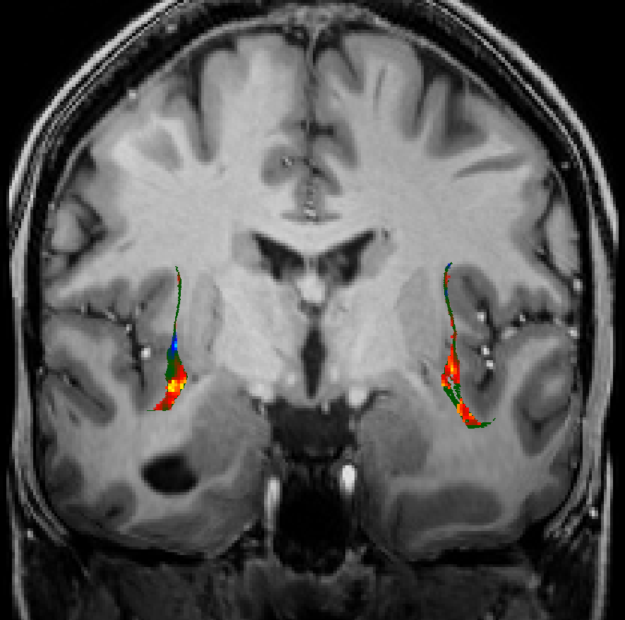

Course Syllabus

Citation from UGOnline:
This practice-oriented seminar provides an introduction into the modern methods of MRI-based neuroimaging for cognitive neuroscience.
It will take students through all stages of a functional MRI study:
- planning and programming an experiment,
- acquiring the data
- data preprocessing
- data analysis and interpretation
In addition to theoretical input, the course will have a strong practical component. Students will first present their project ideas in class. After this, the class will select the best project, which will be implemented into a computer program. Together with the lecturer we will conduct an fMRI experiment with one volunteer. The students will get access to a server, and each person will go through all stages of data preprocessing and analysis.
Open science practices in the field of neuroimaging will also be introduced.
Lecturer
Natalia Zaretskaya
Group Leader of the “Visual Neuroscience Lab”
Contact information
- natalia.zaretskaya@uni-graz.at
- Office hours: Tuesdays 10:00-11:30, sign up via https://doodle.com/bp/nataliazaretskaya/book-a-time
- Talk informally after class
Other courses
SS 2025
- BSc SE “Neural Mechanisms of Consciousness”
- MSc SE “Advanced Neuroimaging Methods”
WS 2025
BSc VL “General Psychology I: Perception and Attention”
BSc KS “Selected Studies in General Psychology”
Research interests
Organisatory aspects
Let’s be “per du” (Natalia)
Course language is English, but I speak German
Let’s be less formal (please interrupt and ask questions!)
Course materials on Moodle: https://moodle.uni-graz.at
Content of the course
“Hard” knowledge
- Basics of performing an fMRI experiment
- Modern practices in fMRI data analysis
- Open science practices in Neuroimaging
“Soft” skills
- Scientific presentations
- Scientific writing
- Critical thinking
Goals
Understand the possibilities and limitations of functional MRI
Be able to plan, conduct, analyze and interpret fMRI experiments in practice
Know and apply open science practices in the field of neuroimaging
Possible workload for 4 ECTS
| Activity | Hours per week | Total hours | Cumulative sum |
|---|---|---|---|
| Classroom | 14 x 1.5 hours | 21 | 21 |
| Individual/group work | 14 x 4 | 56 | 77 |
| Report writing | 23 hours ⁓ 3 full work days! | 100 | |
| Total | 100 |
Course requirements
Active participation in class (not graded)
Attendance (maximum 2 absences are tolerated)
Contribution to class work/discussions
Homework submissions (see the Course Schedule Table)
25%: Project concept presentation (individual or group)
25%: Result visualization presentation (individual or group)
50 %: Final report (individual)
- After the deadline the grade decreases by 1 point per 24 hours
Course feedback confirmation
Evaluation criteria
Project presentation
Scientific merit
Feasibility
Visualization presentation
- Clarity in conveying the message
- Scientific correctness
Report
Formal correctness (see guidelines below)
Understanding of all stages of course work
Presentation guidelines
Duration 5-10 minutes
Aspects to address
General relevance of the topic
1-2 articles on the topic
Specific research question
Why is fMRI necessary?
Specific experimental conditions…?
Report guidelines
Introduction: maximum 500 words
Methods: max 1000 words
Participant
Experimental paradigm
Data acquisition
Data analysis
Results: maximum 500 words
Discussion: maximum 500 words
References
AI usage (official)
The use of generative AI is generally possible in this course. Please note, however, that you as a student bear full responsibility for the accuracy of the generated content.
An academic integrity statement is required for each submitted paper, the verbatim copying of AI-generated text passages must be marked - analogous to conventional citations - by stating the AI system and the specification of the interaction (see “Orientation guidelines for dealing with text-generating AI systems at the University of Graz”, p. 1-2).
It is only prohibited to submit work that was created predominantly or even exclusively using generative AI.
When using generative AI, please ensure that your submissions do not violate the rights of third parties, including copyright, personal rights, and data protection regulations.
AI usage (this course)
AI usage is conditional on full disclosure:
250 words maximum attachment to the report with a description of which AI tools were used and how exactly were they applied
You bare responsibility for the correctness and authorship of the written text
I keep the right to invite you and ask questions about the content
Course schedule
Session # |
Date and time |
Specific topic |
TODO for this class |
Estimated workload (h) |
| 1 | 04.03.2025 | 13:30 | SR 02.31 (0002030122) | Organization and introduction | none | 0 |
| 2 | 11.03.2025 | 13:30 | SR 02.31 (0002030122) | Introduction to fMRI | Make groups, start thinking of a project; Install PsychoPy |
4 |
| 3 | 18.03.2025 | 13:30 | SR 02.31 (0002030122) | Project slam and public vote (Winner does not need to write an interoduction) |
Prepare a presentation of your project (See Presentation Guidelines and Presentation Evaluation Criteria) | 4 |
| 4 | 25.03.2025 | 13:30 | SR 02.31 (0002030122) | Implementation slam and second public vote (Winner does not need to write the experiment description) |
Go through the PsychoPy intro. Implement your project in PsychoPy, show it to the class |
8 |
| 5 | 01.04.2025 | 13:30 | SR 02.31 (0002030122) | Data management I | Neurodesk registration | 4 |
| 6 | 08.04.2025 | 13:30 | SR 02.31 (0002030122) | Experiment feedback, data management II; Data acquisition in the MRI lab 9.04.2025 |
Every course participant performs 3 rounds of the experiment and gives feedback | 1 |
| 7 | 29.04.2025 | 13:30 | SR 02.31 (0002030122) | Preprocessing | MRIQC | 0 |
| 8 | 06.05.2025 | 13:30 | SR 02.31 (0002030122) | Analysis: General linear model | Preprocessing | 4 |
| 9 | 13.05.2025 | 13:30 | SR 02.31 (0002030122) | Result visualization and reporting | Volume space analysis | 4 |
| 10 | 20.05.2025 | 13:30 | SR 02.31 (0002030122) | Analysis: Other analyses types | Surface space analysis | 4 |
| 11 | 27.05.2025 | 13:30 | SR 02.31 (0002030122) | Result presentation slam, public vote (winner does not need to write a results section) |
Prepare a poster with images | 4 |
| 12 | 03.06.2025 | 13:30 | SR 02.31 (0002030122) | Writing an fMRI article | Report draft: Results section | 4 |
| 13 | 17.06.2025 | 13:30 | SR 02.31 (0002030122) | Final session (study examples), course evaluation | Report draft | 4 |
| 14 | 24.06.2025 | 13:30 | SR 02.31 (0002030122) | Report deadline | 4 |
Recommended reading
Will be announced as we go along
Q&A
You can also ask questions in Moodle forum